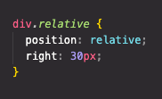
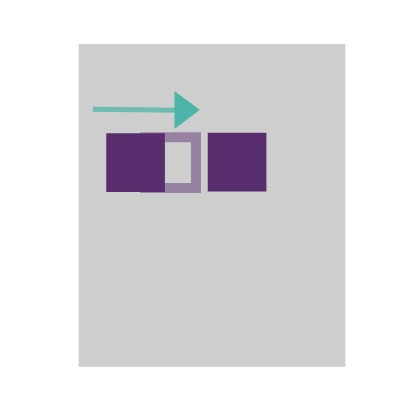
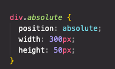
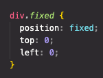
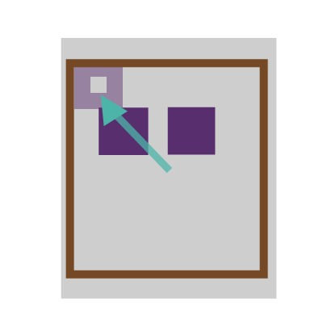

What is the difference between relative, absolute and fixed positioning?
Imagine you have a piece of paper lying flat on your desk with two square kiddies building block sitting side by side on top of the paper.
Relative Positioning
Relative positioning is used to push or pull an element without it effecting other elements. If we were to use the two building blocks as an example, if you were to move the one building block 2 inches, the second building block would not move. This is because is has been moved only relative to its self or normal position.
 
Absolute Positioning
This property allows you to place an element exactly where you want it, relative to the next position
parent
element. If it has no position parent it then uses the document body and moves when scrolling the page.
Imagine placing a smaller piece of card in-between the piece of paper and the blocks, and giving one of the
blocks
the positioning property of absolute relative to the piece of card. You then gave the block an imaginary
magical width of
100%. The block would stretch to 100% width of the piece of card, and not the paper.
Note, these elements are removed from the normal workflow.


Fixed Positioning
Fixed Positioning is relative to the browser window. If you were holding a wooden frame over the piece of paper and gave one of the blocks the positioning property fixed, and fixed it to the top left hand corner of the frame, when you move paper underneath, the fixed block would not move. It has been taken out of the normal workflow.
The best example of this is a fixed nav bar.
 